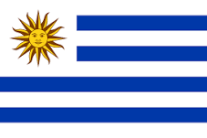

Uruguay
Uruguay
Uruguay, oficialmente República Oriental del Uruguay, es un país de América del Sur, situado en la parte oriental del Cono Sur americano. Limita al noreste con Brasil —estado de Río Grande del Sur—, al oeste y suroeste con Argentina —provincias de Entre Ríos, Corrientes, Buenos Aires y la Ciudad Autónoma de Buenos Aires— y tiene costas en el océano Atlántico por el sur. Abarca 176 215 km² y es el segundo país más pequeño de Sudamérica, después de Surinam. Según los datos del último censo del INE en 2011, la población de Uruguay es de 3 286 314 habitantes5, con lo que figura en la décima posición entre los países sudamericanos

Es una república presidencialista subdividida en diecinueve departamentos y 112 municipios. La capital y ciudad más poblada del país es Montevideo, con 1,3 millones de habitantes,6 y cuya área metropolitana ronda los 2 millones, lo que representa el 56,3 % del total nacional.